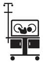

Aman doktor, canım cicim doktor…
 Neler Bekliyor?
Neler Bekliyor?
Çocuk olana kadar hasta olmak bile kolay. Hastalandın, gittiğin bir hastanen var, doktoru beğenmediysen başka yere gidersin. Hatta 30 yaşın altında hamile kaldıysan muhtemelen daha önce bir hastaneye pek de işin düşmemiş olabilir. Şimdi işler değişti. Mevzu zaten senin sağlığın değil. Bebekten bahsediyoruz! Hangi hastanede doğum yapacağını bilmiyorsun, çocuğun hastalandığında nereye gideceğini bilmiyorsun, hastanede hangi koşulları araman gerektiğini, ne sıklıkla doktora gideceğini, acil durumlarda kimi araman gerektiğini, hangi durumun ciddi olup hangisinin ciddi olmadığını bile bilmiyorsun.
Yani ben öyleydim. İkizlere hamileyken bunları bilmiyordum ve keşke birileri bana anlatmış olsaydı. Sağlığın da bir sektörü olduğunu tamamen unutmuş ve ilk gördüğümüz doktora güvenmiştik.
 Ben ne yaptım?
Ben ne yaptım?
İkizlere hamileyken gebeliğimi takip eden doktorum hangi hastanedeyse o hastanede doğum yaptım, çünkü başka bir alternatifim olabileceğini bilmiyordum.
Name’nin doğumunda aynı doktorumla devam ettim ama bu sefer benim istediğim hastanede doğum gerçekleşti. İkizlerin doğumunun gerçekleştiği hastanede, evet bir yenidoğan ünitesi vardı, ama o kadar. Çocuk için özel branşlar yoktu. Nitekim, Mete küvözde kaldı, Mete’nin sıkıntılı tahlil sonuçlarını değerlendirecek yetkin bir çocuk doktoru hastanede mevcut değildi. Telefonla başka doktorları arıyorlar ve sonuçları değerlendirmeleri konusunda yardım istiyorlardı. Hastanede küvözde geçirdiğimiz 15 gün boyunca her gün başka bir felaket haberi verdiler ve sonunda kendi laboratuvarlarının çok yetkin olmadığını, bünyelerinde yeterince çocuk birimi bulunmadığını itiraf ederek bizi başka bir hastaneye sevk ettiler.
Sevk edildiğimiz üniversite hastanesinden bir gün sonra aldığımız cevap şuydu: Çocuğunuzun hiçbir şeyi yok, 15 günü boş yere küvözde geçirmişsiniz…
Bir başka vaka… Tuna doğumdan iki gün sonra taburcu ediliyor. Bir sonraki gün tekrar görmek istiyorlar, götürüyorum, sarılık başlangıcı var, küvöze almamız lazım diyorlar. Tabi buyrun alın, diyorum, maalesef boş küvöz yok diyorlar. Sonuç: Bir oğlum bir hastanede sarılık teşhisiyle fototerapi görüyor, diğer oğlum başka bir hastanede yoğun bakım ünitesinde ve ne hastalığı olduğunu bile tam olarak bilmiyorlar. (Geriye dönüyorum; sence de sütümün gelmemiş olması normal değil mi?)
Name’nin doğumu içinse tüm birimleri kendi içinde olan, yeterince küvözü bulunan daha güvenilir bir hastane belirledim. Çok şükür küvöze veya herhangi bir ek tedaviye ihtiyaç duymadan taburcu olduk.
Çocuk doktoru konusunda ise ikizlere hamileyken çocuk sahibi olan tüm arkadaşlarımı arayıp hangi doktora gittiklerini öğrendim. Sonra bir sonraki muayenelerinde onlarla bir muayeneye katılıp katılamayacağımı sordum. Sonuçta doktoru çalışırken görmek en iyi fikri verecektir. Muayenehanesinin yeri, konuşması, iletişimi... Bana en uygun olan doktorda karar kıldım. (Bence park yerine bile bakın. Arabayı 2 km uzağa park edip soğukta bebekle yürümek pek keyifli olmuyor.)
Name’de ise hastanede takibini yaptırmayı tercih ettim. İkizlerin doktoru şöyle söylemişti: Biz parayı ilk çocuklardan kazanırız, ikinci çocuklarda anneler bizden duyduklarını uygularlar. Aynen öyle…
 Püf Noktaları
Püf Noktaları
Kural 1:
Hamileliğini takip eden doktor hangi hastanedeyse o hastanede doğum yapmak zorunda değilsin. O senin seçtiğin hastaneye gelebilir.
Kural 2:
Hastane seçiminde kadın doğum servisinin yetkinliğinden ziyade yenidoğan ünitesinin yetkinliğine bak. Bebek sağlığı ile ilgili tüm birimlerin olmasına ve yeterli miktarda küvözü olup olmadığına dikkat et.
Kural 3:
Eğer bebeğini bir doktorun özel muayenehanesinde takip ettireceksen, bunu önceden belirle ve doğumdan önce doktoru mutlaka ziyaret et.
Kural 4:
Doktora gitmeden önce soracağın soruları bir not defterine yaz ve aldığın cevapları da not al. Emin ol, eve gider gitmez ne demişti doktor diye eşinle birbirinize bakacaksınız.
Bu arada eğer imkanın varsa doktora tek başına gitme, eşin, annen ya da bakıcın, hiçbiri olmuyorsa bir arkadaşından destek iste. O bebeği soyup giydirirken, ya da muayene dolayısıyla huysuzlaşan bebeği avuturken sen, soracağın soruları sorabilir ve notlarını alırsın. Unutma, muayene için sana verilen bir zaman var, doktorun saati işliyor.
 Sıkıcı Tarafı
Sıkıcı Tarafı
Söz konusu çocuğun sağlığı olduğunda her şey çok sıkıcı. Fakat tabii her muayenede o çocuğu soyup bir daha giydirmenin vermiş olduğu sıkıntı da ayrı bir şey yani.
 Eğlenceli Yanı
Eğlenceli Yanı
Kontrol sonrasında bebeğin gelişiminin gayet iyi olduğunu, kilo aldığını, baş çevresinin gayet güzel büyüdüğünü öğrenmek keyifli. Vay arkadaş, diyorsun, ne güzel beslemişim, aferin bana.